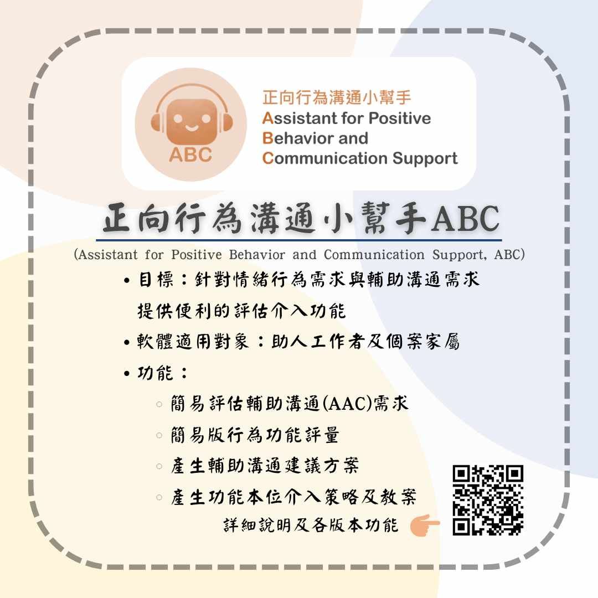

我們是國科會補助「科技突破重度障礙者被遺忘的幸福—包容導向的永續支持方案」計畫，為提升重度障礙者個人的生活品質，以科技軟體協助重度障礙者緩解其情緒行為及溝通障礙，塑造全面溝通無障礙。
👉粉專追起來：
https://www.facebook.com/abc596
👉加入社團這邊請：
https://www.facebook.com/groups/abc596
👉我們的軟體成果：
https://design.eeic.cycu.edu.tw/abc/
👉起心動念介紹影片：
https://youtu.be/0z-8_KJOGIA
#國家科學及技術委員會 #科技突破重度障礙者被遺忘的幸福包容導向的永續支持方案 #正向行為溝通小幫手ABC
